Fine Art for Secondary Schools
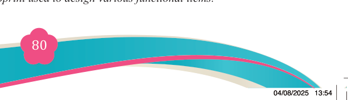
80
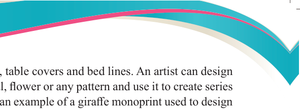

Student’s Book Form Two
wallets, cushion, curtains, chairs, table covers and bed lines. An artist can design
various monoprint such as animal, flower or any pattern and use it to create series
of functional items. Figure 5.1 is an example of a giraffe monoprint used to design
various functional items such as T-shirt, dress, pendant, bag, hat, wallet, cushion, curtain, chair, table cover and bed lines.
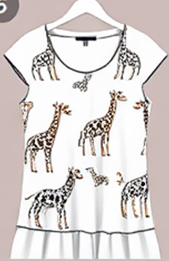
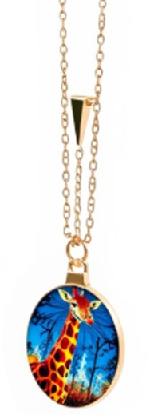
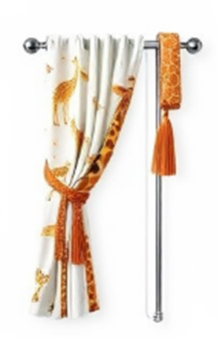
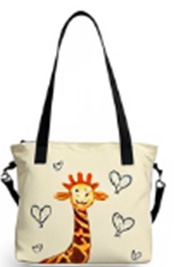
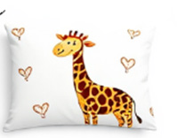
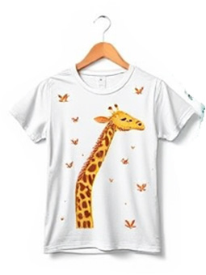
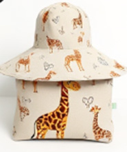
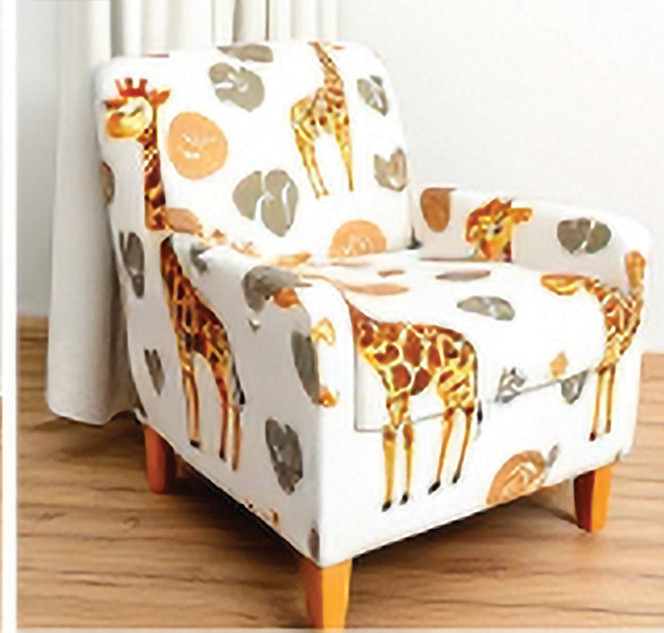
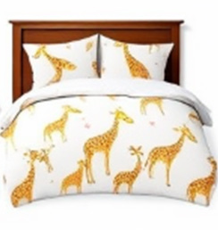
Figure 5.1: A giraffe monoprint used to design various functional items.

04/08/2025 13:54